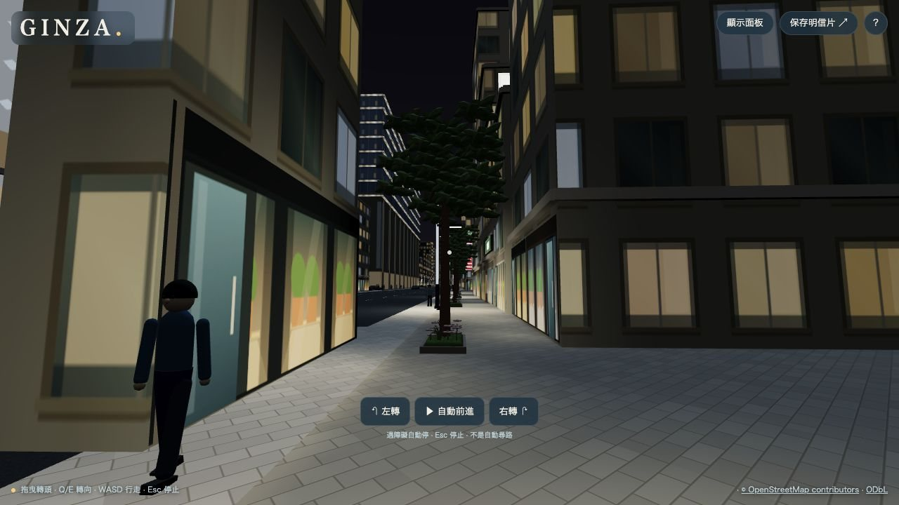
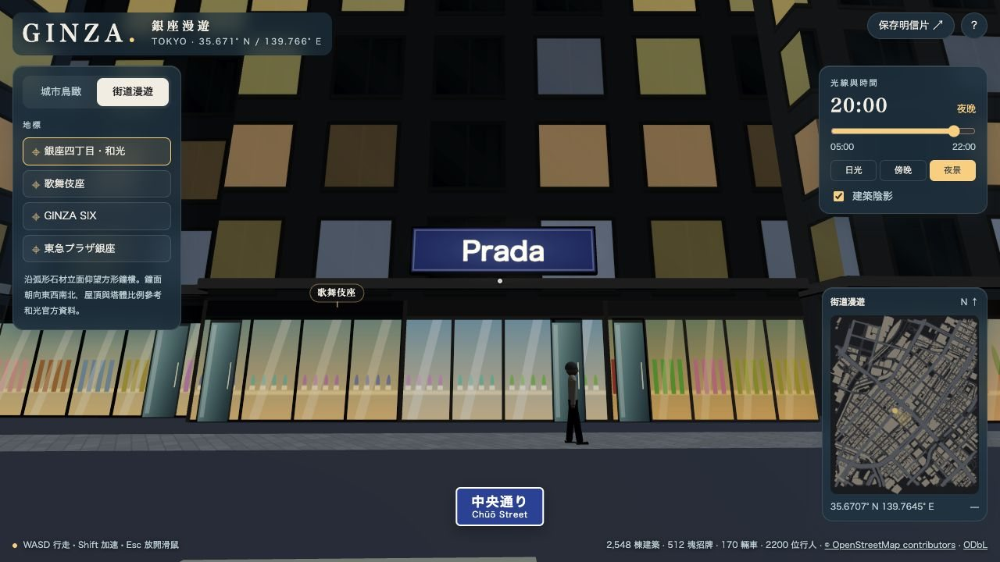

流程 · ④
④ 時間與夜景
時間滑桿改變太陽、天色、窗光、招牌與店內亮度。
解決什麼問題
銀座的魅力一半在夜晚。但上千盞真實燈光即時計算太重，因此用「預先畫好的光照圖＋發光材質」近似夜景。
怎麼處理
| 元素 | 白天 | 夜晚 |
|---|---|---|
| 太陽 | 依東京緯度與當天日期估算方位與高度 | 降到地平線下，改用夜間補光 |
| 建築窗格 | 反光玻璃 | 約六成窗格亮燈，部分拉窗簾 |
| 店內 | 約夜間一半亮度＋玻璃反光 | 全亮，依業態暖光或冷白光 |
| 招牌與燈箱 | 微亮 | 主要光源，袖看板合併金屬外殼與柔光 |
| 地面 | 石材鋪裝 | 路燈、招牌、櫥窗前出現暖色光池（7 m 以上不受影響） |

常見問題：截圖為 2026-10-09，店面尚無店內縱深。
下一步：故障排查

常見問題：同上，為舊版店面外觀。
下一步：想加 X 改哪
考慮了哪些情況
| 情境 | 怎麼應對 |
|---|---|
| 想分享固定時刻的畫面 | ?hour=20；也可用面板「日光／傍晚／夜景」 |
| 牆角溢光 | 已知限制：光照圖不算建築遮擋 |
| 人車、樹木等實例化物件 | 不注入光照圖，避免材質相容問題 |
為什麼這樣設計
一張 2048² 光照圖的成本與路燈數量無關；代價是沒有即時陰影與反射。文件中已明確標示「不是即時照明」。